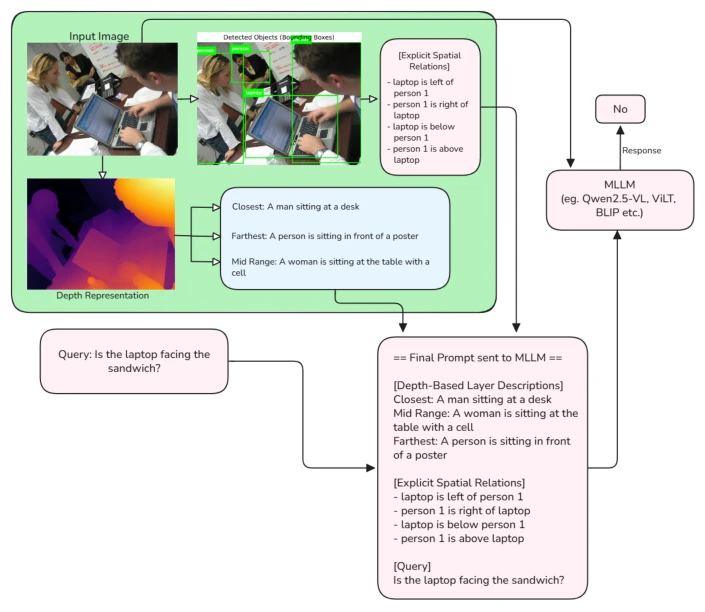
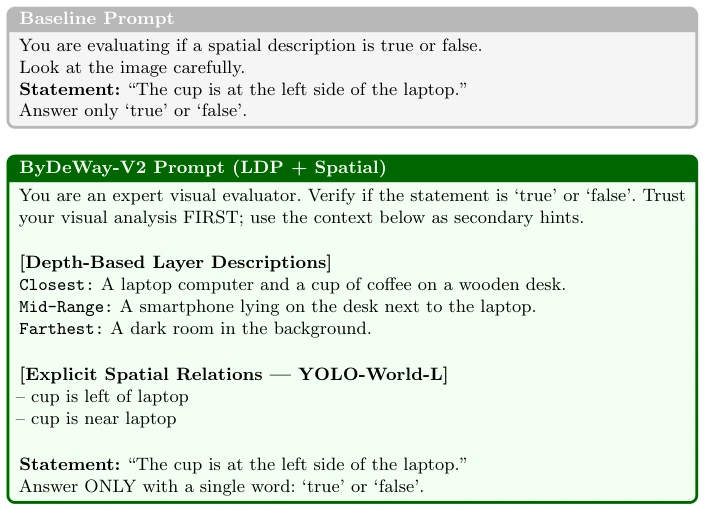

This paper offers a remedy for the MLLM's "spatial guessing" flaw, but the remedy consists entirely of "external tools". ByDeWay-V2 is essentially a culmination of Prompt Engineering, combining YOLO's detection boxes and depth maps to feed into the large model. The advantage is that no training is required, making it usable anywhere; the disadvantage is the dependency on external detectors, where if YOLO fails, the large model fails accordingly. For decision-critical scenarios, this "interpretable hallucination suppression" is indeed superior to black-box approaches, but compute overhead and latency are hidden pitfalls. It demonstrates that under resource constraints, explicit geometric constraints are more effective than simply stacking parameters, yet the cost of "training-free" operation is the pipeline complexity during inference.
Multimodal large models often commit "spatial hallucinations" in decision-critical applications, leading to robot misjudgment or security vulnerabilities. Existing methods like LDP [15] introduce depth-layered prompting, but can only handle macro depth perception, unable to parse fine-grained object interactions within the same geometric plane, such as projection and topological relationships like "to the left of..." or "inside...". Literature [2] points out visual hallucination is the core pain point of MLLMs, while VSR [10] and BLINK [6] benchmarks further confirm the model's capability deficiency in handling adjacency, direction, and topology queries. Furthermore, black-box outputs lack interpretability, limiting operator trust. Therefore, this study aims to provide auditable geometric evidence for downstream decision-making through explicit spatial relation extraction, rather than relying solely on statistical priors.
The framework splits into two parallel paths. The upper path uses YOLO-World-L to detect objects, generating natural language predicates via geometric heuristics (center distance, IoU, overlap rate) (e.g., "cup is to the left of laptop"). Specific calculations include vertical/horizontal relationships, containment contact judgment, and proximity. The lower path uses DepthAnything V2 to generate depth-layered descriptions. Finally, both are concatenated with the query to form a Prompt. The core innovation is the SpatialAnalyser module, which makes 2D geometric relations explicit, compensating for LDP's insufficiency in focusing only on 3D depth. In the Prompt, depth information serves as a macro anchor, spatial predicates as micro evidence, jointly injected into the MLLM. This process requires no fine-tuning at all, relying only on external modules during inference, achieving a bridge between 3D depth and 2D semantics.

Fig. 1: ByDeWay-V2 Workflow. The framework runs two parallel branches on the in- put image. (Top branch) YOLO-World-L detects all objects and returns precise bounding boxes; pairwise geometric heuristics then derive explicit spatial predicates (e.g. “laptop is left of person 1”, “person 1 is above laptop”). (Bottom branch) DepthAnything V2 produces a dense depth map that is partitioned into three layers (closest, mid-range, far- thest); KOSMOS-2 captions each layer independently. Both streams are serialised into a single structured prompt (Final Prompt sent to MLLM ) and forwarded—together with the original image and user query—to the downstream MLLM (e.g. Qwen2.5-VL, ViLT, BLIP). The dotted path represents the standard baseline prompt used for comparison.Fig. 2: YOLO-World-L open-vocabulary detection on a high-resolution sample. The model successfully isolates the two target entities specified in a spatial query (“The cup is at the left side of the laptop.”): laptop (conf. 0.98) and cup (conf. 0.96). These unambiguous, high-confidence bounding boxes serve as the geometric primitives from which the SpatialAnalyser module computes pairwise spatial predicates (e.g. left of, near) to form the MLLM prompt.

Fig. 3: Prompt comparison for spatial query: “The cup is at the left side of the laptop.” (Top) The baseline prompt provides no spatial grounding. (Bottom) The ByDeWay-V2 prompt supplies LDP layer captions and explicit YOLO-World-L spatial predicates extracted at inference time. The computed predicate (cup is left of laptop) directly aligns with the query, allowing the MLLM to confidently answer true.
The study conducted extensive evaluation on VSR, BLINK, and POPE benchmarks. The BLINK spatial subset performed most brightly, Qwen2.5-VL's F1 score improved by 46% relative to LDP, BLIP-Base recovered from random level to 0.53. ViLT under a strict 40 token budget, injecting only spatial predicates was superior to depth prompts. POPE tests show explicit spatial context can effectively suppress object existence hallucinations. However, Qwen2.5-VL on VSR showed a phenomenon of precision improvement but recall decline, attributed to its "vision-first" instructions causing the model to sometimes ignore correct context. This indicates that while explicit prompts can anchor facts, they need to balance the model's own visual confidence calibration.